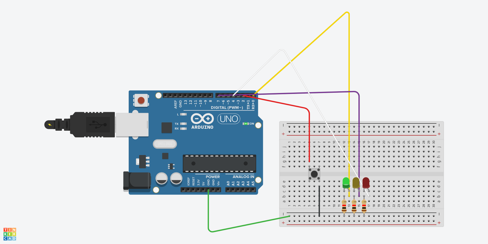
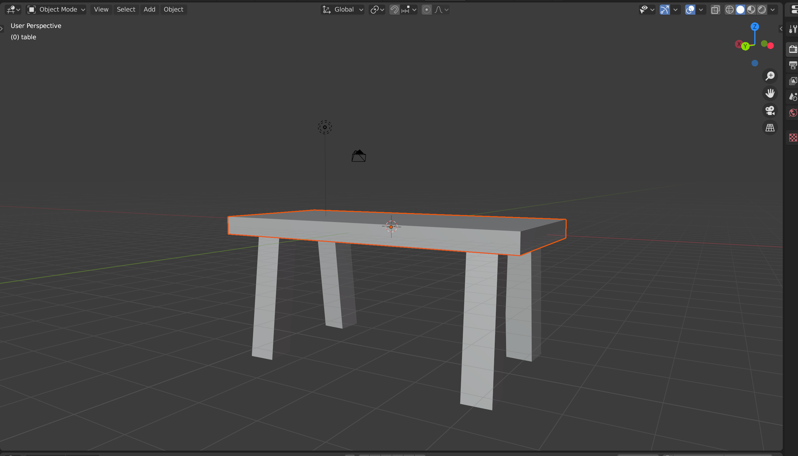

Week 3
Computer Aided Design.
This week's assignment is about using different Computer-Aided Design software and testing to design and model using different techniques like raster, vector, 2D, 3D, render, animate, simulate, etc.
Fusion 360
Given that I had experience in Fusion 360 I managed to get my 3d Model ready quite easily.
- First I found an image of a guitar that was easy to sketch and created a sketch of it in photoshop. Photoshop wasnt the smartest idea for a sketch but it was the only one that was available to me for the time being. The sketch was then inserted into Fusion 360.

- I then imported the sketch of the guitar body I wanted to create.
- Then using the Extrude tool I pulled the body and neck up.
- I made the holes for where the electronics should go. The electronics for this are still being sorted out and should be ready soon!
Till then I made the holes and heres the final outcome:
- I further added the 3d model to different parts of the website using the features offered by Fusion itself. This can be found
here and :
Photoshop
Adobe Photoshop is a raster graphics editor. Apart from the intial sketch, I also used Photoshop to make the poster. To do this, I first imported the guitar in the software and then proceeded to add text and other elements till I was happy about it.
- The reason I used Photoshop is I wanted to use it to create a better visual representation of my Final Project.
tinkerCad
TinkerCad is possibly the least powerful of all the softwares I have used.
- I used TinkerCad to make a smiple working circuit and played with electronic equipment to learn and design more.
Blender
Blender is a free and open-source 3D computer graphics software toolset used for creating animated films, visual effects, art, 3D printed models, motion graphics, interactive 3D applications, virtual reality, and computer games. It is by far one of the hardest softwares to learn and really complicated if started ouut without any tutorial. I used blender guru's tutorial to learn how to make a table.
